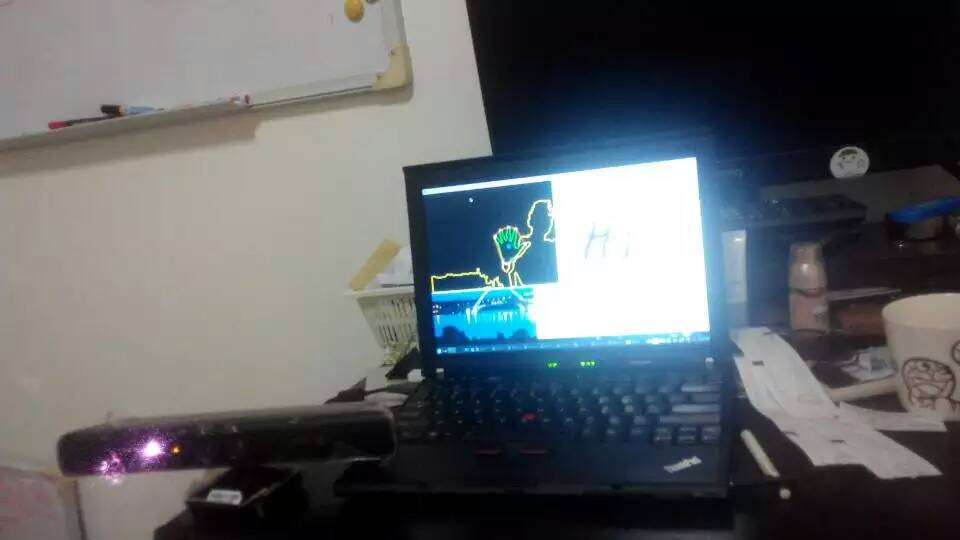
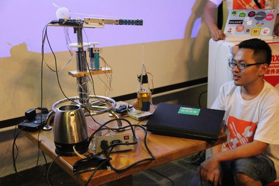

Some public projects Some public projects Here I list some public projects I've done. Kinect handtrack hack  Wave hands in the air to draw "Hi" . This is a kinect hack based on libfreenect I wrote a tutorial here Robot at a hackathon  My robot in a hackathon. I cut a wheel chair ... read more
My log My log I don't really log a lot. But if I log some stuff, no matter good or not, people would know something. Or something important or whatever. test read more